地政学
ザルツブルクはオーストリアとドイツ国境に近い州都です。司教領の記憶、アルプス交通、バイエルンとの往来、観光外交が重なり、小都市でありながら中央欧州の境界性をよく示します。国境の近さも日常です。今も。
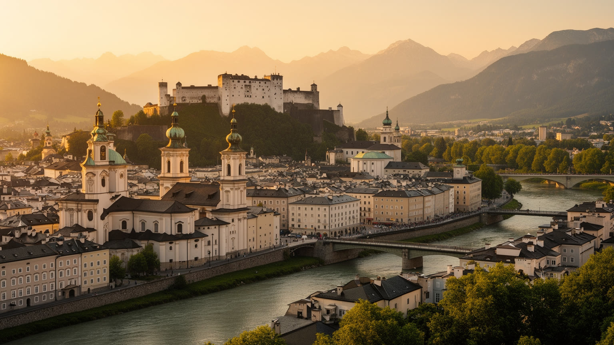
🇦🇹 オーストリア / ヨーロッパ / World City Atlas
ザルツァッハ川と都市の丘に囲まれた旧司教領の都。バロックの旧市街、音楽祭、観光、大学、州都機能、アルプス交通、住宅問題が、人口16万人ほどの都市に高い密度で重なっています。
都市の骨格
ザルツブルクは大都市ではないが、旧市街の景観、アルプスの入口、州都の行政、国際観光、音楽文化が狭い盆地に集まる。美しい街を支える労働と住宅の圧力まで読むと、都市の密度が見えてくる。
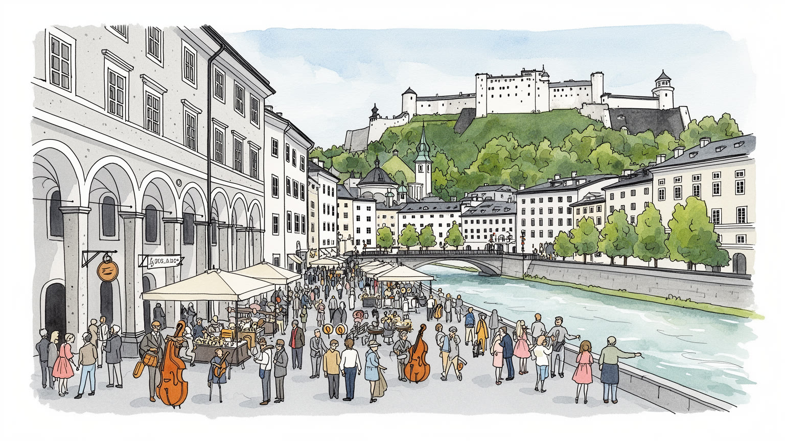
ザルツブルクはオーストリアとドイツ国境に近い州都です。司教領の記憶、アルプス交通、バイエルンとの往来、観光外交が重なり、小都市でありながら中央欧州の境界性をよく示します。国境の近さも日常です。今も。
州経済は観光、文化、商業、交通、食品、行政、大学、医療に支えられます。華やかな音楽祭の背後にはホテル、清掃、厨房、舞台、警備、交通、季節労働があり、都市の所得と負担を同時に作ります。現場が厚いです。
大聖堂、修道院、バロック建築、モーツァルトの記憶、音楽祭が都市の顔です。同時にカトリックの暦、移民の信仰、学生文化、地元方言、食卓が混じり、観光の名声を生活文化へ戻します。祈りも今も続いていきます。
旅行者は旧市街、城塞、ミラベル庭園、川辺、音楽祭を短い距離で巡れます。住民には家賃、交通、学生の部屋、季節混雑、観光価格、洪水と暑さへの備えが、絵葉書の街の現実になります。生活も街の主役なのです。
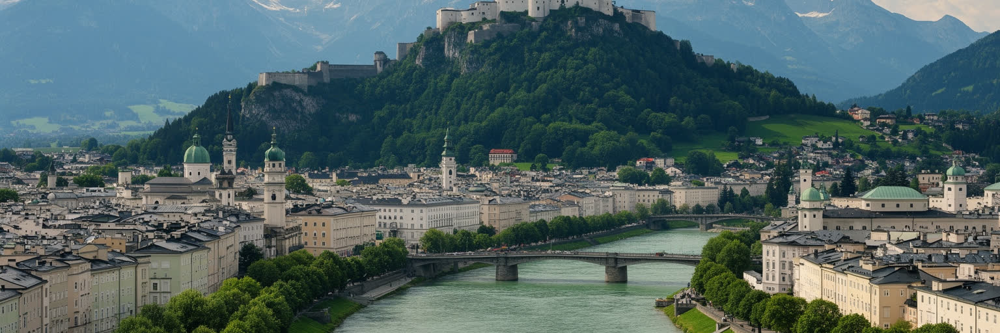
ザルツブルクの第一印象は、ザルツァッハ川の両岸に広がる旧市街と、城塞を載せた丘、背後に迫るアルプス前縁の近さで決まる。川は都市を二つに分けるだけでなく、橋、散歩道、洪水対策、観光動線、住民の通勤を束ねる軸である。メンヒスベルク、カプツィーナーベルク、ガイスベルクの緑は中心部にすぐ影を落とし、狭い盆地の中で建物の高さ、道路の通し方、眺望保護を制限してきた。美しい地形は都市の魅力である一方、平地の少なさは住宅供給と交通容量を難しくする。旧市街の石畳と坂道は歩く喜びを作るが、配送、介護、車椅子、冬の凍結には課題もある。ザルツブルクを読むには、城塞からの眺めだけでなく、川沿いの水位、橋の混雑、丘の下を抜ける道路、郊外へ広がる住宅地まで見る必要がある。山と川に守られた都市は、同時に山と川に条件づけられた都市でもある。景観が強いほど、開発の余地、家賃、観光客の集中、気候リスクが一つの問題として現れる。歩ける小さな中心の魅力は、地形が作った恵みであり制約である。さらに、駅や郊外の商業地へ目を移すと、旧市街の輪郭だけでは足りない現代都市の広がりが見える。川に近い中心と丘の外側の住宅地を結ぶ動線が、観光の都市と住む都市を毎日つないでいる。地形を読むことが、観光の美しさと生活の不便さを同時に理解する入口になる。
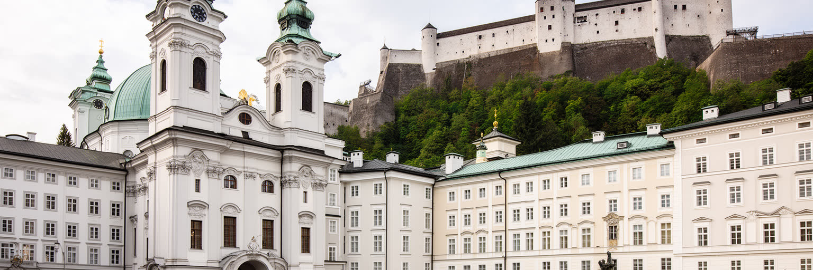
ザルツブルクの政治的な厚みは、現在の州都機能だけでは説明できない。都市は長く大司教が統治する司教領の中心であり、宗教権威、塩の収益、交易、城塞、教会、広場が一体となって領邦都市を形作った。大聖堂、レジデンツ、修道院、城塞は観光名所である前に、政治と宗教が分かちがたかった時代の都市装置である。近代以降、ザルツブルクはオーストリアの連邦州の州都となり、州政府、行政、教育、文化政策、観光管理を担う。ウィーンのような国家首都ではないが、地方自治と国境地域の利害を調整する場所として重要である。ドイツのバイエルンに近く、通勤、買物、観光、空港、鉄道、文化圏が国境を越えてつながるため、都市の視野は市域より広い。司教領の遺産は美しい外観だけでなく、誰が都市を統治し、誰が中心部を使えるのかという問いを現在へ残している。宗教都市から文化観光都市、州都へと役割が変わっても、権力の場所が旧市街に集中する構造は続く。ザルツブルクを政治から読むことは、絵葉書の街の背後に、自治、文化予算、景観規制、住宅政策、国境地域の調整があることを見抜く作業である。州政府の判断は、劇場の補助金、道路計画、自然保護、難民支援、学校、観光税の使い方として市民生活へ戻る。小さな州都だからこそ、制度の決定と街路の変化の距離が短い。重要だ。
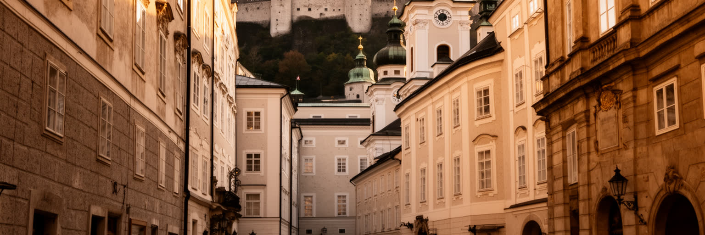
ザルツブルク旧市街の価値は、教会や宮殿が個別に美しいことだけではない。大聖堂、レジデンツ広場、ゲトライデガッセ、修道院、城塞、川、橋、丘が連続し、徒歩の範囲で中世からバロックまでの都市構造を読める点にある。世界遺産として守られる景観は、観光客のための舞台であると同時に、店、住居、学校、行政、劇場、教会、通勤路が重なる生活空間でもある。看板や改修、照明、配送、音、混雑、宿泊施設の増加は、保存と暮らしの緊張を日々生む。古い建物は夏の暑さや冬の寒さ、バリアフリー、防火、断熱、家賃の問題を抱え、歴史的な街路は大量観光の流れを受け止めなければならない。旧市街を単に保存された美術品として扱えば、住民の日常は薄くなり、中心部は消費のための背景になってしまう。ザルツブルクの遺産を読むには、修復職人、店舗の入れ替わり、住民の騒音対策、観光バスの管理、教会の行事、学生の移動まで含めて見る必要がある。歴史を生かすとは、古い形を残すだけでなく、そこに普通の生活を残すことである。観光の名声が強い都市ほど、この当たり前の条件が都市の公共性を測る基準になる。早朝の搬入、夜の静けさ、祭りの日の人波、雨の日の石畳まで、遺産は毎日使われることで傷み、同時に意味を更新している。修復と利用の均衡が崩れれば、遺産は生活から離れてしまう。
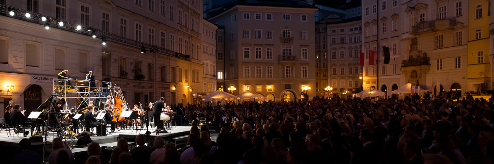
ザルツブルクはモーツァルトの生誕地として知られるが、都市の文化経済を決定的に形作るのは音楽祭の存在である。夏のザルツブルク音楽祭は、オペラ、演劇、コンサート、国際的な観客、スポンサー、メディア、宿泊、飲食、交通を一気に呼び込み、人口規模を超えた文化都市の密度を作る。劇場の舞台に立つ演奏家や俳優だけでなく、舞台技術、衣装、照明、翻訳、警備、清掃、ホテル、厨房、タクシー、案内、チケット業務の働き手が、この季節を支える。華やかな文化は高所得の訪問者を集め、都市のブランドを高める一方、中心部の価格、混雑、短期滞在化、地元住民との距離も広げる。モーツァルトの名は観光商品として強く使われるが、文化都市としての価値は、過去の天才を記号にするだけでは保てない。音楽教育、地元の演奏家、小劇場、学校、合唱、教会音楽、若い観客が育つ環境があって初めて、祭りは都市の生活に根を下ろす。ザルツブルクを文化から読むには、チケットを買える人だけでなく、文化を作り、運び、片付け、学ぶ人の条件を見る必要がある。音楽祭は都市の誇りであると同時に、文化が誰のものかを問う装置でもある。祝祭の夜の明るさは、舞台裏の長い労働時間と切り離せない。市民が日常的に触れられる演奏会や教育の場が残るほど、祭りは外から来る富裕層だけの行事にならず、都市の文化基盤になる。
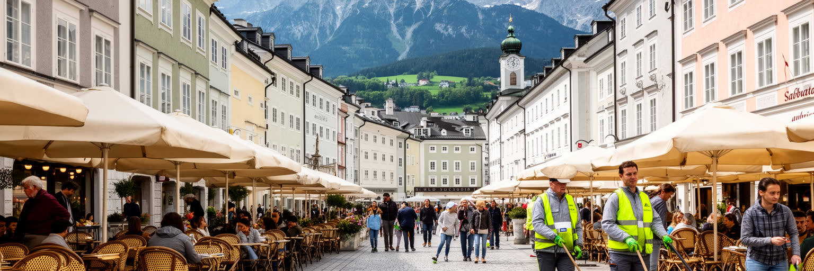
ザルツブルク観光は、旧市街、城塞、ミラベル庭園、モーツァルト関連地、音楽祭、映画の記憶、アルプス日帰り旅行を短い距離で組み合わせられる点に強みがある。駅から中心部へ歩き、橋を渡り、丘へ上り、カフェに入り、夕方に劇場へ向かう流れは、訪問者に非常に分かりやすい。しかし観光都市の分かりやすさは、働く人の調整によって作られる。ホテルの客室清掃、厨房、配膳、案内所、土産物店、警備、交通整理、ゴミ収集、劇場運営、バス運転、空港と鉄道の接続が、観光の快適さを支える。季節によって仕事量が大きく変わるため、雇用は柔軟である一方、不安定にもなりやすい。観光客が増えるほど、市内の家賃や日用品価格、混雑、騒音、短期貸しの問題が住民へ戻ってくる。ザルツブルクを観光から読むなら、訪問者の満足だけでなく、住民が中心部を使い続けられるか、働く人が都市に住めるか、観光収入が公共交通や文化保全へ返るかを見る必要がある。美しい街は自然に保たれるのではなく、清掃、規制、修復、接客、公共投資の積み重ねで保たれている。観光の成功は、写真の数ではなく、街の生活を削らずに訪問を受け入れられる力で測られる。日帰り客、団体旅行、長期滞在者、音楽祭の来訪者では街の使い方が違うため、観光管理は人数だけでなく時間帯と場所の配分を考える必要がある。
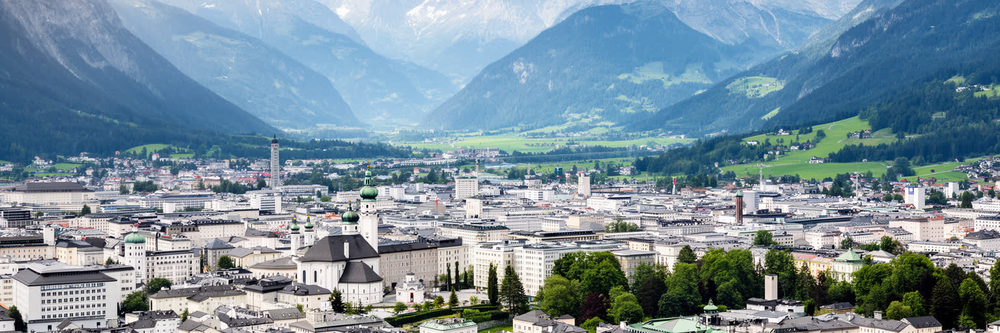
ザルツブルクのGDPを考えるとき、市域だけでなく州全体の経済圏を見なければならない。州の経済は観光、宿泊、飲食、商業、食品、建設、交通、行政、医療、教育に支えられ、山岳地域のスキー、湖沼観光、農業、エネルギー、地域ブランドが州都へ結びつく。ザルツブルク市はその中で、州政府、大学、空港、鉄道、文化施設、卸売、小売、医療、企業サービスを集める結節点である。観光は強い収入源だが、景気、天候、雪不足、国際移動、労働力不足に左右されやすい。州都の安定した行政や教育の雇用は都市に厚みを与える一方、若い人が働き続けるには住宅と賃金のバランスが重要になる。食品や流通、建設、修理、介護の仕事は観光の表面には出にくいが、都市と州を日常的につなぐ。ザルツブルクの経済を読む面白さは、文化都市の名声と、アルプス地方の実務的な労働が同じ場所で交わる点にある。高い一人当たりGDPは豊かさを示すが、収入が全員に均等に届くわけではない。観光地の価格、短期雇用、通勤距離、技能人材の不足を見なければ、数字は都市の実感から離れる。州都の繁栄は、山村、湖畔、国境の町、交通網との依存関係の中で理解されるべきである。都市の安定は公共部門だけでなく、季節の変動を受ける民間サービスと、地域の小規模な事業者が持ちこたえる力にも左右される。
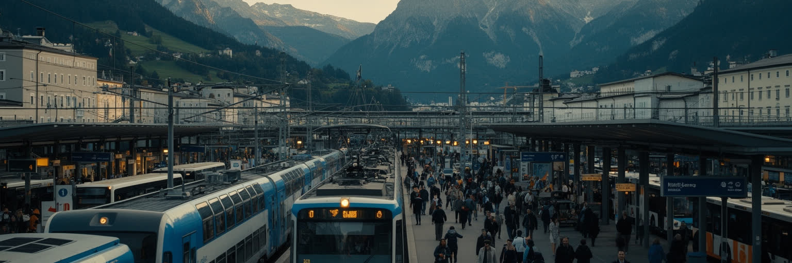
ザルツブルクは、オーストリア国内の地方都市であると同時に、ミュンヘン、ウィーン、インスブルック、リンツ、バイエルンの町を結ぶ交通結節点である。中央駅には長距離列車、地域列車、バス、観光客、通勤者、学生が集まり、空港は音楽祭やアルプス観光の入口にもなる。ドイツ国境に近いため、買物、通勤、物流、観光、家族関係は国境を越えて日常化している。国境の近さは便利さを生む一方、交通量、道路混雑、排気、騒音、住宅地への圧力ももたらす。旧市街は歩いて楽しいが、観光バスや配送車、地元の移動、郊外からの通勤をどう分けるかは難しい課題である。公共交通を強めることは、景観保護、気候政策、住民の公平性に直結する。ザルツブルクを交通から読むには、駅や空港だけでなく、橋、トンネル、自転車道、郊外バス、国境を越える生活圏を見る必要がある。観光客が短時間で移動できる都市ほど、その背後には日々の通勤時間と交通管理がある。アルプスへ向かう華やかな旅と、病院や学校へ通う普通の移動が同じ道路と線路を使うため、交通政策は観光政策でも生活政策でもある。小さな都市の交通容量には限界があり、その限界をどう分かち合うかが都市の成熟を示す。とくに週末や音楽祭の時期には、歩行者、タクシー、バス、自転車の流れが重なり、街の小ささが強みから負担へ変わる瞬間がある。
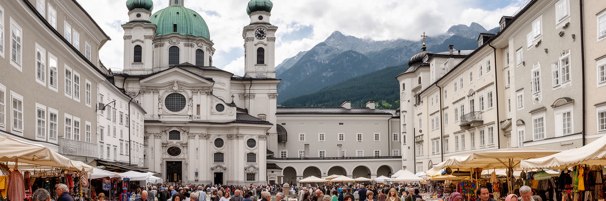
ザルツブルクはカトリックの都市としての記憶が非常に濃い。大聖堂、修道院、鐘の音、聖人暦、行列、教会音楽は、司教領の都だった歴史を現在の街路へ残している。宗教は観光の装飾ではなく、都市の時間の区切り、学校、慈善、音楽、葬送、祝祭の中に入り込んでいる。一方、現代のザルツブルクにはオーストリア国外にルーツを持つ住民、学生、季節労働者、難民、近隣国から通う人が暮らし、教会以外の礼拝、食の習慣、言語、家族の行事も都市の日常になっている。観光客が見るバロックの統一感は、社会が均質であることを意味しない。移民の子どもが学校で必要とする支援、職場での言語、住居探し、宗教的な配慮、行政手続きは、文化都市の包摂力を試す。ザルツブルクを宗教と多文化から読むには、荘厳な教会建築だけでなく、教会の福祉活動、地域の食料支援、移民の商店、学生寮、礼拝後の会話を見る必要がある。古い信仰の記憶と新しい生活文化が同じ狭い都市にあるからこそ、共存は抽象的な理念ではなく、近所、学校、職場の実務になる。都市の美しさは、異なる住民が中心部から排除されない時に初めて公共性を持つ。宗教的な休日、学校行事、食のルール、葬送の違いをどう扱うかは、観光案内には出にくいが、住む人の尊厳に関わる。支援の窓口や地域のつながりがあるかどうかも、文化都市の信頼を左右する。
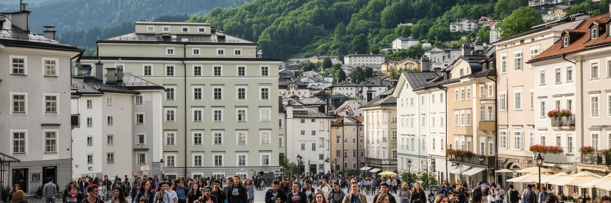
ザルツブルクは人口規模だけを見れば大都市ではないが、住まいの圧力は強い。旧市街と駅周辺は観光、通勤、学生、文化施設、商業が集中し、便利な地区の家賃は上がりやすい。大学と音楽系の教育機関は若い人を集めるが、学生にとって手ごろな部屋を探すことは簡単ではない。観光需要が短期滞在や宿泊施設を増やすと、長期で暮らす住民の選択肢は狭まりやすい。若い家族、高齢者、移民労働者、ホテルや飲食で働く人、介護職、清掃職が中心部に近く住めなければ、都市の便利さは遠い通勤に支えられることになる。ザルツブルクの生活の質は、歩ける中心、文化施設、学校、医療、緑地、治安に支えられるが、その質へ誰が届くかは所得と住宅政策で変わる。古い建物の改修は防災や断熱に必要だが、家賃上昇を伴うこともある。住宅を観光や景観とは別の問題として扱うと、都市の本質を見落とす。美しい街に必要なのは、訪問者の宿だけでなく、働く人、学ぶ人、子どもを育てる人、老いる人が暮らせる普通の住まいである。住み続けられる人の幅が狭くなれば、旧市街の生活感も文化の担い手も薄くなる。学生の部屋、家族向け住宅、高齢者の住まい、労働者の通勤を同時に考えることが、文化都市の持続条件になる。住む場所の不足は、文化や観光の未来にも直結する。住宅は景観の外側ではなく、景観を生かす人の基盤である。
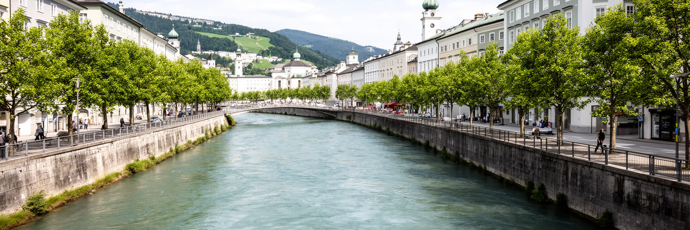
ザルツブルクの気候は、降水の多さ、冬の雪、湿った冷気、夏の雷雨、山からの風によって特徴づけられる。ザルツァッハ川は都市の景観と涼しさを作るが、増水時には橋、低地、地下空間、歴史的建物にリスクをもたらす。アルプスに近い都市では、気候変動は遠い将来の話ではない。雪の量、山岳観光、河川流量、斜面災害、熱波、保険、公共交通の運行が、市民生活と観光経済へ戻ってくる。旧市街の石と密な建物は夏に熱を持ちやすく、高齢者、屋外労働者、冷房の弱い住まいには負担となる。気候適応には、堤防や警報だけでなく、街路樹、日陰、涼める公共施設、雨水管理、断熱改修、歩きやすい橋、災害時の多言語情報が必要である。ザルツブルクを気候から読むには、美しい雪景色や川辺の散歩と、洪水への備え、暑さに弱い人、観光の季節変動を同じ問題として見る必要がある。歴史都市は古い景観を守るだけでは持続しない。水と暑さに対応しながら、住民と訪問者の安全を守る都市運営が求められる。気候対策は環境政策であると同時に、文化遺産、福祉、観光、住宅の政策でもある。川沿いの遊歩道、橋の避難経路、学校や高齢者施設の暑さ対策は、派手ではないが都市の安全を決める。観光客にも住民にも分かる警報と避難情報が、国際的な観光都市には欠かせない。水辺の魅力を守ることは、同時に水害への備えを続けることでもある。
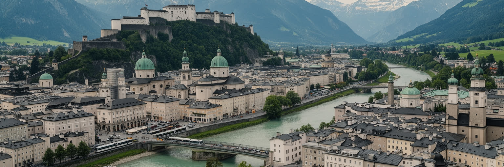
ザルツブルクを読む面白さは、人口規模の小ささと世界的な知名度の大きさが同居している点にある。城塞、大聖堂、旧市街、モーツァルト、音楽祭、アルプスの風景は、都市に強い記号性を与える。しかし実際の都市は、観光の背景ではなく、州政府、大学、医療、交通、住宅、移民、学生、介護、清掃、舞台裏の労働で動く生活の場所である。旧司教領の権威はバロックの景観として残り、現代の州都機能は行政と公共サービスを集める。観光と文化は収入を生むが、家賃、混雑、短期滞在、季節労働、中心部の生活感の薄れも引き起こす。川と丘の美しさは都市の誇りである一方、開発余地と気候リスクを制限する条件でもある。ザルツブルクを単なる美しい旧市街として見ると、働く人の時間、住民の費用、国境地域の交通、宗教と多文化の調整が見えなくなる。逆に、これらを合わせて読むと、小都市が世界的な文化ブランドを持つ時に何が起きるのかが分かる。ザルツブルクの価値は、歴史を磨き続けることだけでなく、観光の名声の中で普通の生活を中心部に残せるかにかかっている。美しさを支える制度と労働を見た時、この都市は絵葉書ではなく、現代ヨーロッパの課題を凝縮した場所として立ち上がる。文化の発信力、住宅の公平性、気候への備えを同時に扱えるかが、次のザルツブルクの成熟を決める。